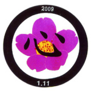

啓蒙普及推進歌
国立国会図書館に、国民共有の文化的資産として保存されました。

母を 慕たい 讃える 歌
-
神聖なる
命
授かりぬ
手塩に 掛けて 育みつ
両手を 合掌せて 初詣
行く 末 祈る 母心 -
清く
正しく
逞しく
泣いたら 負けよ 人生は
骨身を 削って 汗流せ
人の 鏡が 母心 -
聞こえてくるよ
幼な時に
歌ってくれた 子守唄
優しい 声が 今もなお
まぶたに浮かぶ 母心 -
海より
深く
山よりも
高く
尊い 親の 恩
導きたりし 人の 道
嗚呼・・ 讃えなん 母心
「お母さん┄ お母さん┄ お母さん┄」
挿入歌「子守唄」
寝んねんころりよ おころりよ
坊や
良い
子だ
寝んねしな
京の
土産に
何
貰た
怪獣
ゲーム機プラモデル

上寿花
-
古今東西
願いは
同つ
健康長寿で 幸福に
夢と 希望を 胸に 秘め
白寿を 目指して 生きて 行く -
波乱万丈
人生は
一寸先が 闇なれど
七難八苦を 乗越えて
咲かせて 散ろうよ 上寿花 -
泣いて
笑って
幾年ぞ
森羅万象 ご先祖に
感謝と 懺悔 忘れずに
世界平和の 愛の 道

命
-
人の
命の
尊さは
何より 重く 計れない
死にたいときも あるけれど
辛苦に耐えて 生きなれば
明るい 明日がきっと来る -
一つしかない
命だよ
くよくよせずに突き 進め
当って砕けろ 心意気
捨てたら負けだ 人生は
死んで花実が 咲くじゃなし -
一寸
先が
闇なれど
運と 度胸の 肝試し
死んだ 心算でやってみな
夢と 希望に 挑戦し
咲かせて 散ろう 平和花
| 秘境 |
| 亀戸慕情 |
| 時代 |
| 夜桜 |
| 雀百まで（男女星） |
| 今昔平和道 |
| 男道 |
| 運命 |
| 浮世舟 |